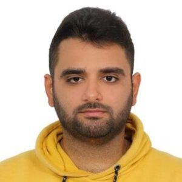

Nonsmooth optimization
Growth conditions, generalized gradients, and the local behavior of piecewise-smooth objectives.
Ph.D. Candidate · School of Operations Research and Information Engineering

I am a Ph.D. Candidate in Operations Research at Cornell University, where I am fortunate to be advised by Adrian Lewis.
Before coming to Cornell, I earned my B.S. and M.S. in Industrial Engineering at Bilkent University, where I was advised by Firdevs Ulus.
My work examines how the geometry of optimization problems informs optimality, stability, and algorithmic convergence. My current interests fall into three connected areas:
Growth conditions, generalized gradients, and the local behavior of piecewise-smooth objectives.
Geometric and regularity properties that help explain stability and convergence near minimizers.
Difference-of-convex programming and polyhedral approximation techniques for nonconvex problems.
Geometry · Analysis · Algorithms
arXiv preprint, 2026
Journal of Global Optimization, 93, 335–357 (2025)
Instructor · Cornell University
Teaching assistant · Bilkent University
Fahaar Pirani
Ph.D. Candidate
School of Operations Research and Information Engineering
Cornell University
Office
291 Rhodes Hall
136 Hoy Road
Ithaca, NY 14853
Email: fp268@cornell.edu
GitHub: github.com/fahaarpirani